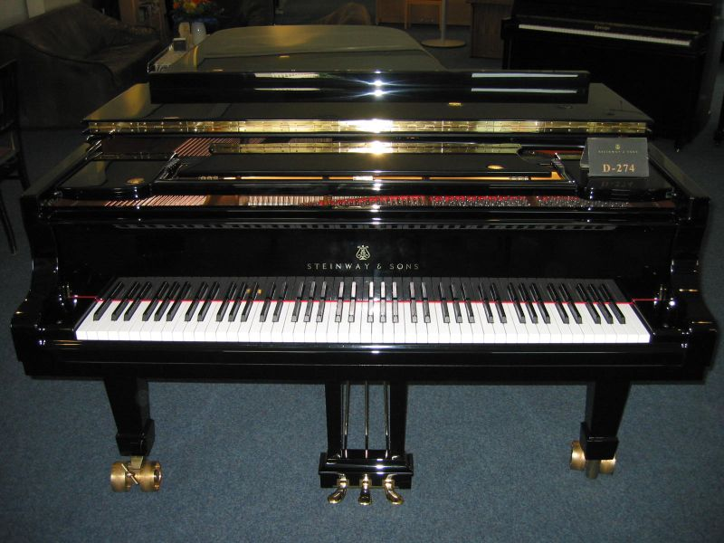
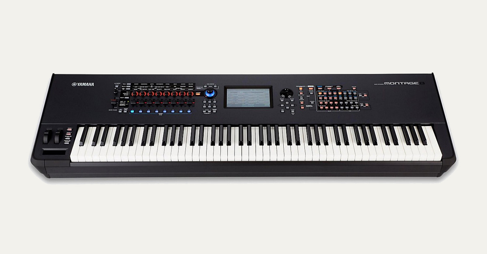

So, what is a keyboard?
A keyboard is a musical instrument that is operated by pressing keys that produce different sounds depending on their positioning. When they are pressed in a set pattern or combination, they produce songs.
The most common types of keyboards are:
- Pianos

- Electronic Keyboards or Synthesizers

- Accordians

History of Keyboards
The earliest known keyboard instrument was the Ancient Greek hydraulis, a type of pipe organ, invented in the third century BC.
During the 14th century two types of keyboards known as the clavichord and the harpsichord appeared. They remained popular until the widespread adoption of the piano in the 18th century. The piano was revolutionary as it gave the user the ability to vary the intensity of the keys(and hence, the sound) by applying different amounts of force.